Exercises
1.
Introduction
to
AI
Intelligence means being smart and knowing how to do things like:
Thinking
Solving problems
Making good choices
Learning new things
Activity
-
1
You see someone fall on the playground. You help them up.
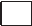 You grab a toy from your friend without asking.
You say “please” and “thank you.”
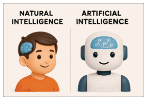 Natural Intelligence is the brainpower that humans and animals are born with. People use natural intelligence to:
Think and ask questions
Learn new things
Solve problems
Remember what we see and hear
Talk and understand others
Animals use Natural Intelligence too. A dog can perform tricks, and birds know how to build nests.
Lina sees that her shoes are untied.
Lina thinks, “I might trip!"
Lina ties her shoes.
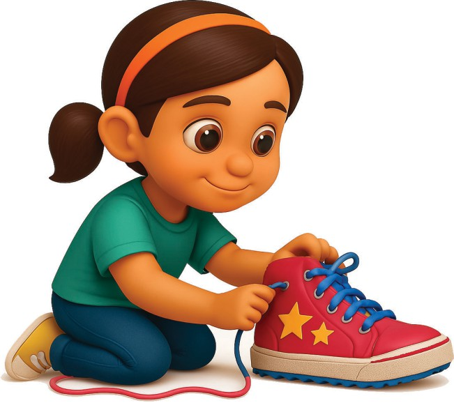
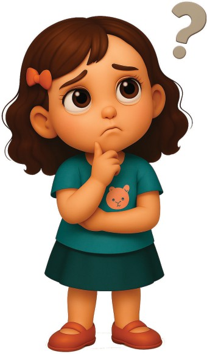
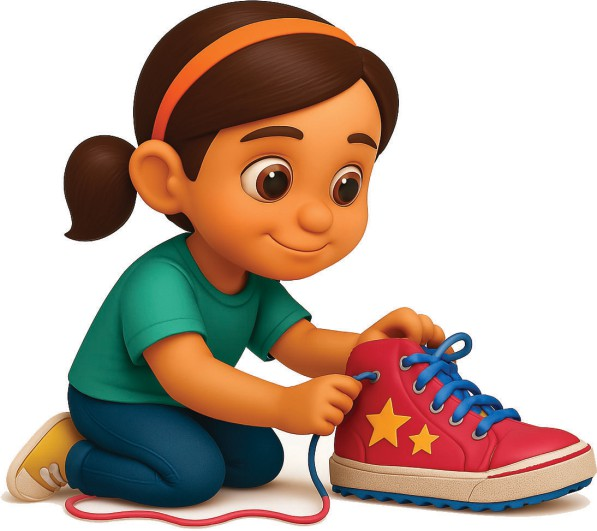
1. Untied 2. Thinking 3. Tying
Activity
-
2
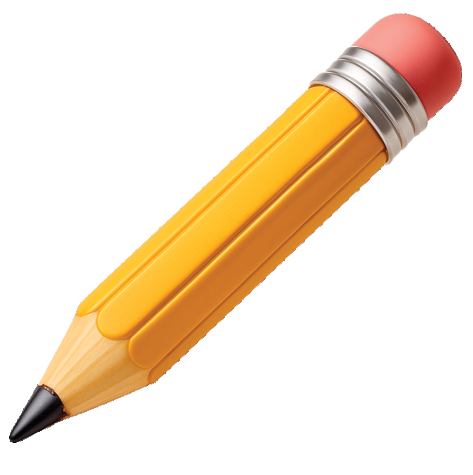
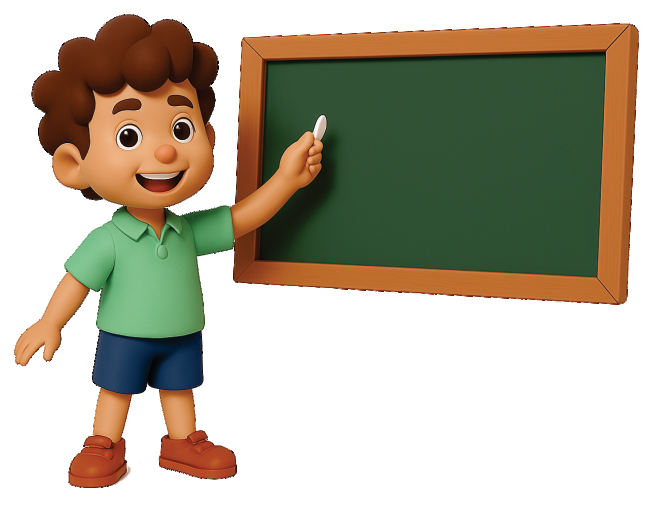
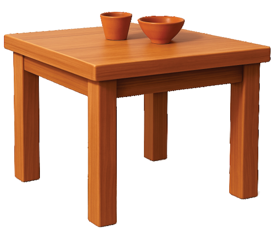
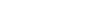
Artificial Intelligence
Machines do not have Natural Intelligence. They can not think on their own. Machines are made intelligent by Humans; therefore, they have Artificial Intelligence (AI).
Artificial Intelligence helps machines think, learn, and do smart things like humans.
(Tricks, Humans, Think, Smart)
Intelligence means being and knowing how to do things.
People use natural intelligence to and ask questions.
A dog can perform using natural intelligence.
Machines are made intelligent by .
What does AI stand for?
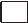 a. Apple Icecream b. Artificial Intelligence c. Animal Island
AI is a brain in a machine.
a. Silly b. Smart c. Sleepy
Practicals
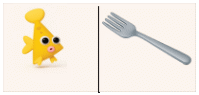
Y
Fish
Not
a
Fish
Go to Ai for Oceans Level 1
Click on “Continue”
The student will see images of fish and things that are not fish.
Give at least 30 suggestions to the AI to help it do a better job.
Click the continue button.
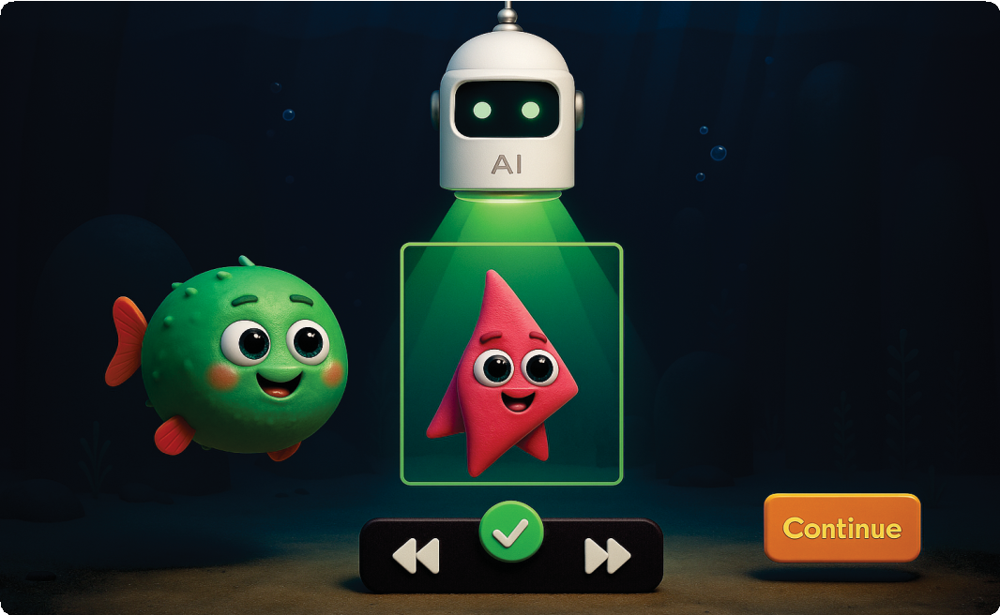 Click “Run”
AI will look at things in the ocean and decide: Is it a fish or is it garbage
Click continue.
CONGRATULATIONS, MARINE WARRIOR !!!
Garbage dumped in the water affects Marine Life. By finishing this activity, you have programmed AI to identify fish or trash (garbage).